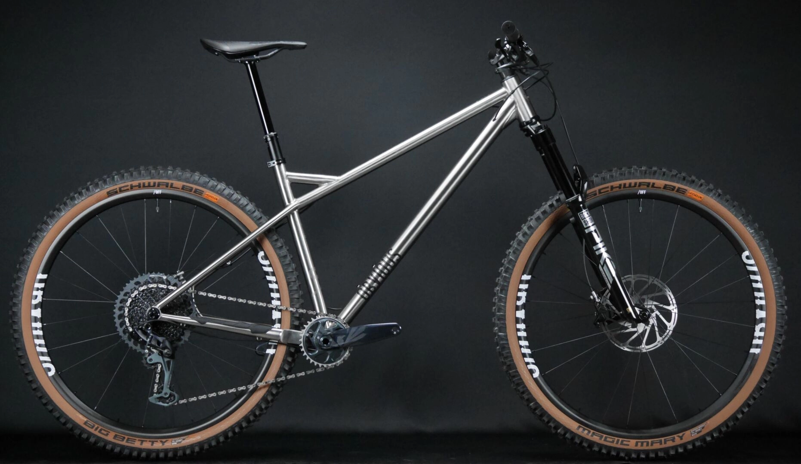
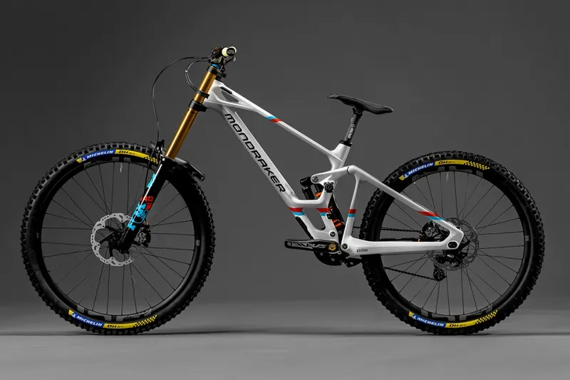
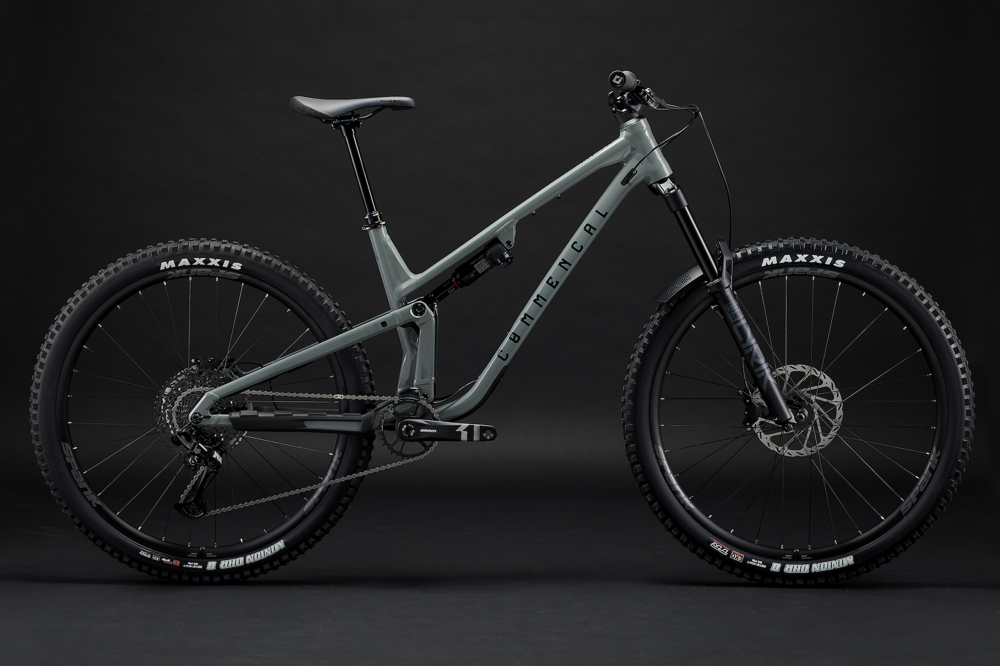
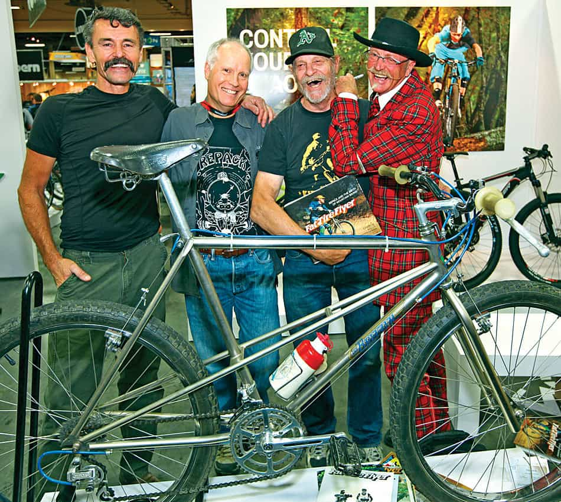
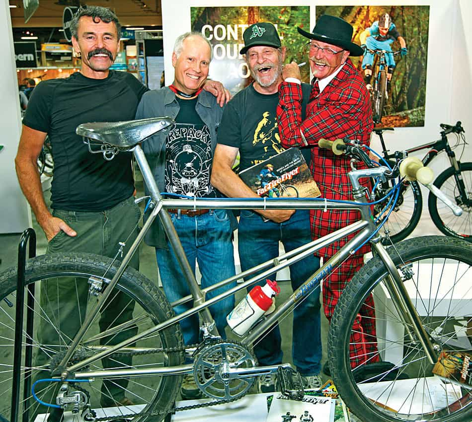

Three types
Classic MTBs (All-Terrain Bikes) are more versatile and suitable for a variety of terrains. They are designed to provide a balanced experience between climbing and descending, but they do not have rear suspensions and their front suspensions do not exceed 100mm of travel. Standard mountain bikes are often the ideal choice for riders who want to explore a variety of conditions without specializing in a specific discipline. Downhill mountain biking (DH -> Down Hill) is focused on rapid descent on technical and steep trails. These bikes are equipped with long travel suspensions (=200mm) to absorb shocks, powerful brakes and specific geometry promoting stability at high speeds. The descents can be steep and strewn with obstacles, and DH mountain bikes are designed to excel in these extreme conditions. And the Enduros are somewhere in between. Enduro is a discipline that combines elements of uphill and downhill. Enduro bikes are designed to be versatile, with suspensions that can handle various terrains, while still remaining light enough (not like DHs).
MTB
DH
Enduro
Rampage
"Roc d'Azur"


"The creators"
 

"The creators"